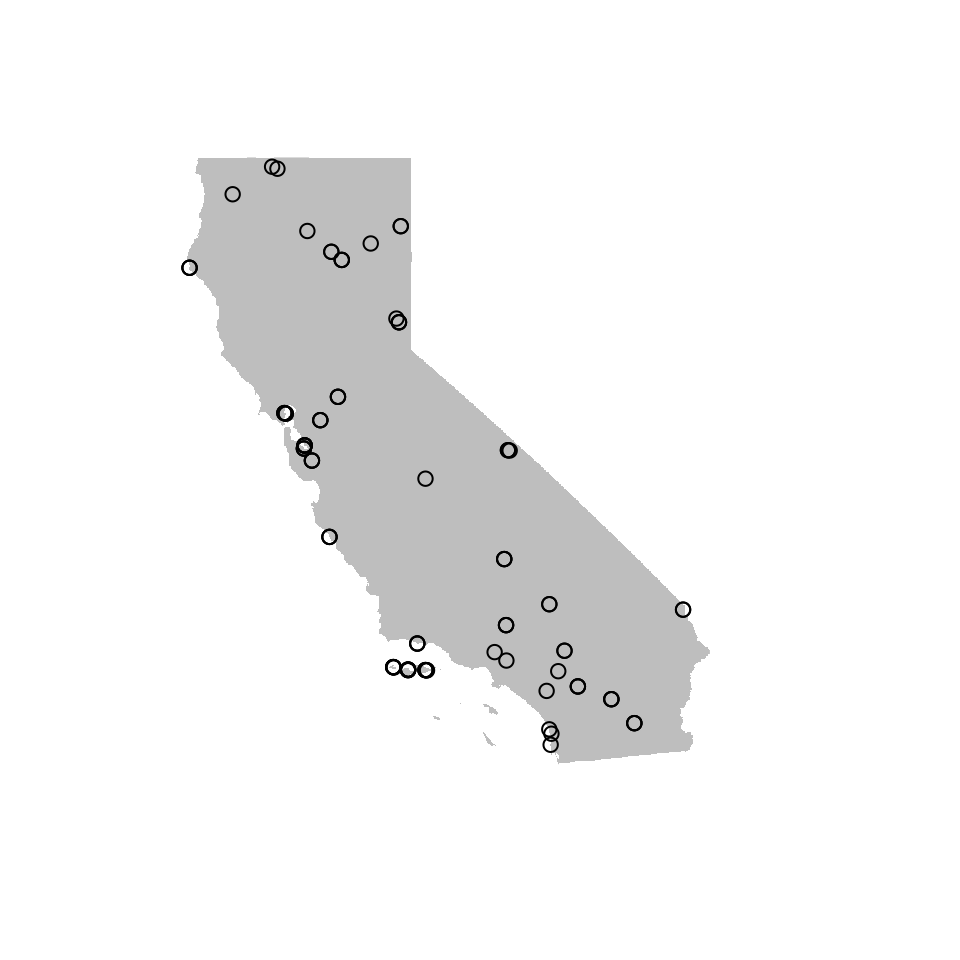
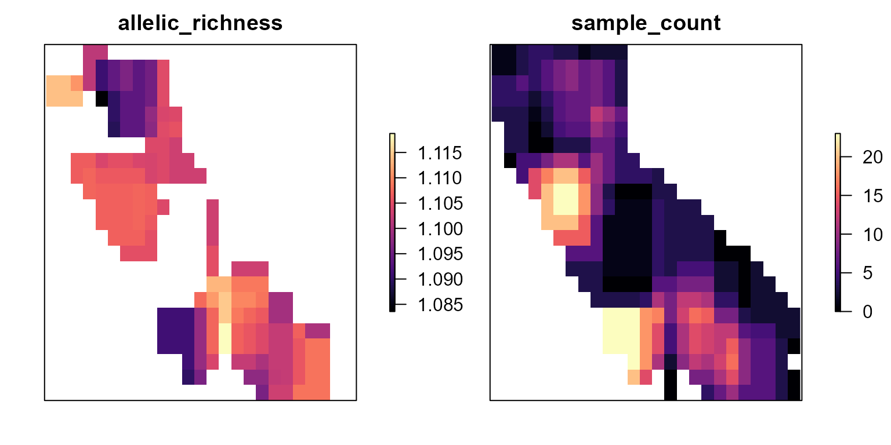
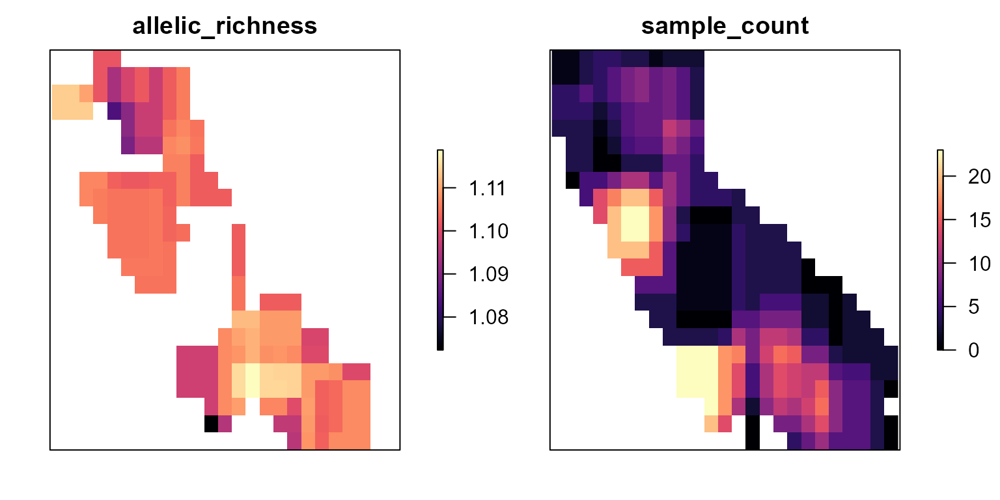
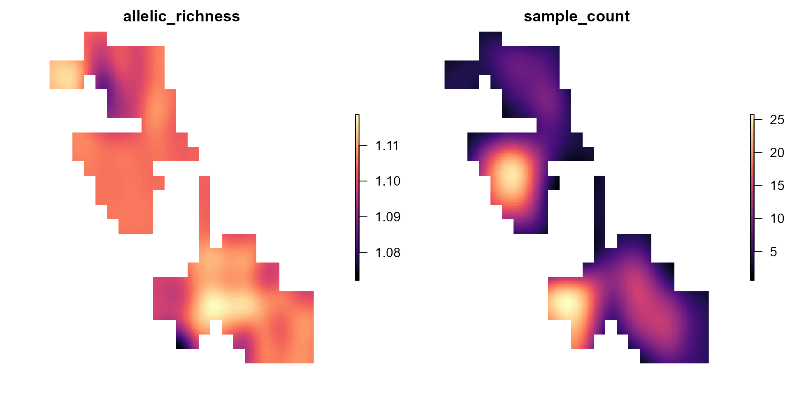
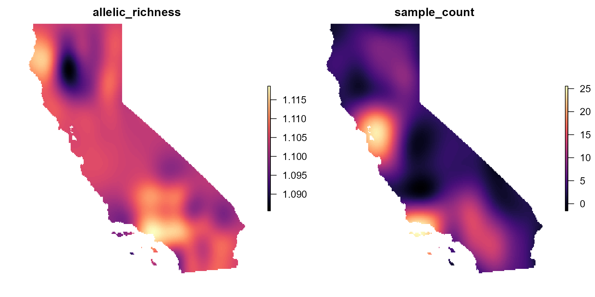
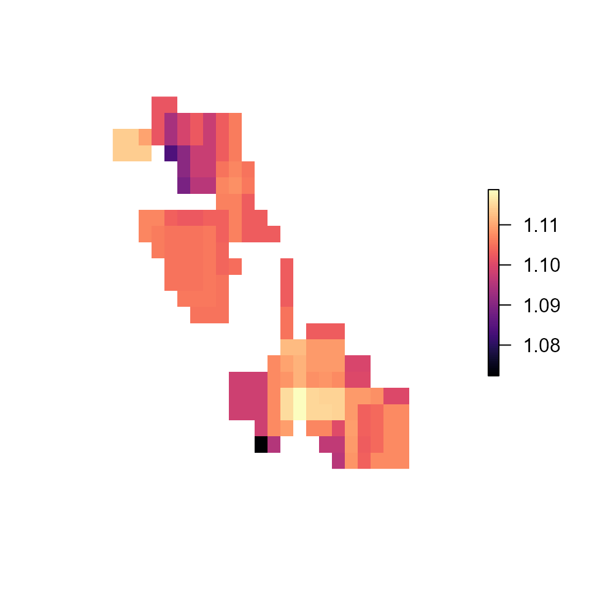
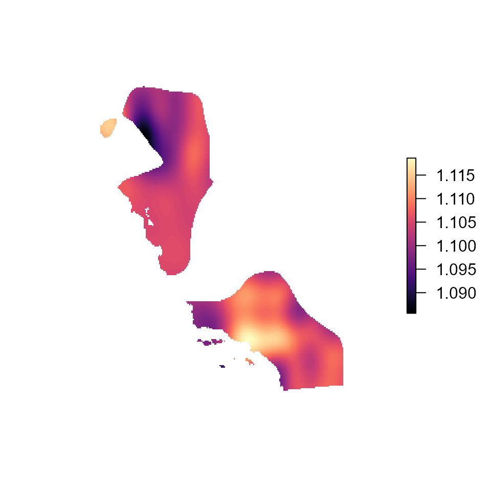
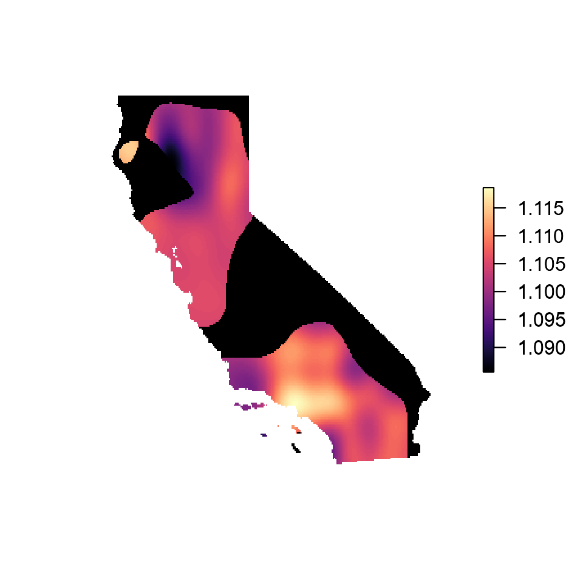

Wingen Vignette
wingen-vignette.Rmd
coords_file <- system.file("extdata", "ex_coords.csv", package = "wingen")
lyr_file <- system.file("extdata", "ex_layer.tif", package = "wingen")
vcf_file <- system.file("extdata", "ex_vcf.vcf", package = "wingen")
ex_lyr <- raster(lyr_file)
ex_coords <- read.csv(coords_file)
ex_vcf <- read.vcfR(vcf_file)## Scanning file to determine attributes.
## File attributes:
## meta lines: 537
## header_line: 538
## variant count: 1000
## column count: 109
##
Meta line 537 read in.
## All meta lines processed.
## gt matrix initialized.
## Character matrix gt created.
## Character matrix gt rows: 1000
## Character matrix gt cols: 109
## skip: 0
## nrows: 1000
## row_num: 0
##
Processed variant 1000
Processed variant: 1000
## All variants processed
# convert from vcf to genind in order to calculate allelic richness
genind <- vcfR::vcfR2genind(ex_vcf)
# allelic richness requires populations
# since we are working with individual data we will treat each individual as it's own population
genind$pop <- as.factor(1:nrow(genind@tab))
# calculate allelic richness using hierfstat
ar <- hierfstat::allelic.richness(genind)
# ge AR data frame
ar_df <- ar$Ar
# run window AR (for the sake of speed I am aggregating the raster by a factor of 50)
rar <- window_ar(ar_df, ex_coords, ex_lyr, fact = 50, wdim = 5, rarify = FALSE, min_n = 4)
plot(rar, col = magma(100), axes = FALSE)
# run window AR with rarefaction
wind_rar <- window_ar(ar_df, ex_coords, ex_lyr, fact = 50, wdim = 5, rarify = TRUE, rarify_n = 4, rarify_nit = 10)
plot(wind_rar, col = magma(100), axes = FALSE)
krig_ar <- krig_rast(wind_rar, disagg = 10)## Warning in krig_rast(wind_rar, disagg = 10): no grd provided, defaults to using
## first raster layer to create grd## [using ordinary kriging]
## [using ordinary kriging]
krig_ar <- krig_rast(wind_rar, ex_lyr, agg = 5)## [using ordinary kriging]
## [using ordinary kriging]
krig_msk <- div_mask(wind_rar, 4)
plot(krig_msk, col = viridis::magma(100), box = FALSE, axes = FALSE)
krig_msk <- div_mask(krig_ar, 4)
plot(krig_msk, col = viridis::magma(100), box = FALSE, axes = FALSE)
krig_msk <- div_mask(krig_ar, 4, plot = TRUE, bkg.col = "black")